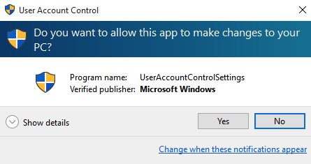

CIS 527
Lab 1 - Windows 10 User Management
Windows 10 User Accounts
- Settings
- Control Panel
- Administrative Tools
Default Accounts
- Administrator
- Full Access, Cannot Be Deleted
- Disabled by Default
- Has No Password by Default!
- DefaultAccount - Contains Default Profile
- Guest
- Limited Access
- Disabled by Default
User Account Control (UAC)

- Protect System from Unwanted Changes
- Allow Administrators to Use Non-Admin Accounts Easily
- Compare to Mac/Linux Password Prompts
Keep Going!
Start Lab 1, Task 2:
Configure Windows 10